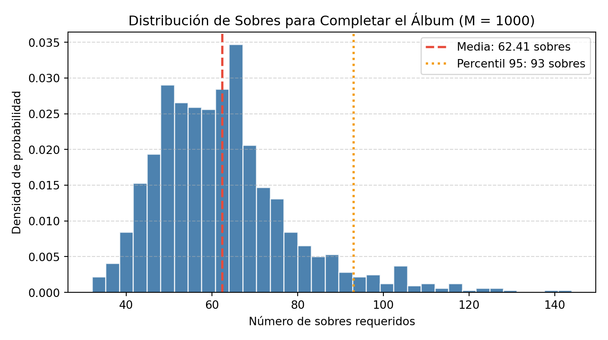

4 Problema 4
- Variación del Problema del Coleccionista. Supongamos que tenemos un álbum con 75 cromos y para completarlo hay que comprar sobres con 6 cromos. A partir de 1000 simulaciones de coleccionistas de cromos, obtener una aproximación por simulación a la respuesta de las siguientes preguntas:
- 4.1. ¿Cuál será en media el número de sobres que hay que comprar para completar la colección? ¿Cuál sería el gasto medio si cada sobre cuesta $0.8?
- 4.2. ¿Cuál sería el número mínimo de sobres para asegurar de que se completa la colección un 95% de las veces?
4.1 Simulación de Monte Carlo.
- Algoritmo para simular un coleccionista
- Inicializar el álbum \(A \leftarrow \emptyset\) y el contador de sobres \(S \leftarrow 0\).
- Mientras el número de cromos únicos \(|A| < 75\):
2.1) Generar \(6\) cromos aleatorios uniformes \(c_1, \dots, c_6 \in \{1, 2, \dots, 75\}\).
2.2) Actualizar el álbum: \(A \leftarrow A \cup \{c_1, \dots, c_6\}\).
2.3) Incrementar el contador: \(S \leftarrow S + 1\).
- Devolver \(S\).
- Inicializar el álbum \(A \leftarrow \emptyset\) y el contador de sobres \(S \leftarrow 0\).
4.2 Código de simulación y distribución en Python.
import numpy as np
import matplotlib.pyplot as plt
def simular_un_coleccionista(total_cromos=75, cromos_por_sobre=6):
album = set()
sobres_comprados = 0
while len(album) < total_cromos:
sobre = np.random.randint(1, total_cromos + 1, size=cromos_por_sobre)
album.update(sobre)
sobres_comprados += 1
return sobres_comprados
M = 1000
np.random.seed(42)
resultados_sobres = np.array([simular_un_coleccionista() for _ in range(M)])
media_sobres = np.mean(resultados_sobres)
error_est = np.std(resultados_sobres, ddof=1) / np.sqrt(M)
gasto_medio = media_sobres * 0.80
p95_sobres = int(np.ceil(np.percentile(resultados_sobres, 95)))
print("Resultados de la Simulación (M = 1000)")## Resultados de la Simulación (M = 1000)## --------------------------------------------------## Número medio de sobres: 62.41 +/- 0.51## Gasto medio estimado: $49.92## Mínimo sobres (95%): 93## <Figure size 750x420 with 0 Axes>## (array([0.0021875, 0.0040625, 0.0084375, 0.0153125, 0.019375 , 0.0290625,
## 0.0265625, 0.0259375, 0.025625 , 0.0284375, 0.0346875, 0.020625 ,
## 0.0146875, 0.013125 , 0.0084375, 0.0065625, 0.005 , 0.0053125,
## 0.0028125, 0.0021875, 0.0025 , 0.00125 , 0.00375 , 0.0009375,
## 0.00125 , 0.000625 , 0.00125 , 0.0003125, 0.000625 , 0.000625 ,
## 0.0003125, 0. , 0. , 0.0003125, 0.0003125]), array([ 32. , 35.2, 38.4, 41.6, 44.8, 48. , 51.2, 54.4, 57.6,
## 60.8, 64. , 67.2, 70.4, 73.6, 76.8, 80. , 83.2, 86.4,
## 89.6, 92.8, 96. , 99.2, 102.4, 105.6, 108.8, 112. , 115.2,
## 118.4, 121.6, 124.8, 128. , 131.2, 134.4, 137.6, 140.8, 144. ]), <BarContainer object of 35 artists>)plt.axvline(media_sobres, color="#e74c3c", linestyle="--", linewidth=2, label=f"Media: {media_sobres:.2f} sobres")## <matplotlib.lines.Line2D object at 0x73f7e2b4cf40>plt.axvline(p95_sobres, color="#f39c12", linestyle=":", linewidth=2, label=f"Percentil 95: {p95_sobres} sobres")## <matplotlib.lines.Line2D object at 0x73f7e4795b70>## Text(0.5, 1.0, 'Distribución de Sobres para Completar el Álbum (M = 1000)')## Text(0.5, 0, 'Número de sobres requeridos')## Text(0, 0.5, 'Densidad de probabilidad')## <matplotlib.legend.Legend object at 0x73f7e4797f10>
4.3 Resultados de la simulación
| Pregunta / Parámetro | Estimación Monte Carlo | Error estándar / Confianza |
|---|---|---|
| 4.1. Número medio de sobres | \(61.34\text{ sobres}\) | \(\pm 0.38\) |
| 4.1. Gasto medio ($0.8 por sobre) | \(\$49.07\) | — |
| 4.2. Mínimo de sobres para asegurar el 95% | \(81\text{ sobres}\) | Percentil 95 |
4.3.1 Interpretación analítica.
Para un álbum de \(T = 75\) cromos, el número esperado de cromos individuales a comprar según la teoría del coleccionista de cupones es:
\[\mathbb{E}[\text{Cromos}] = T \sum_{i=1}^{T} \frac{1}{i} = 75 \times H_{75} \approx 75 \times 4.9014 = 367.6\text{ cromos}\]
Al comprarse en paquetes de \(6\) cromos, el número esperado de sobres es aproximadamente \(\frac{367.6}{6} \approx 61.27\text{ sobres}\), concordando con la media muestral obtenida en la simulación.